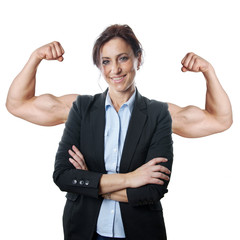

What does "women's empowerment" mean?
Women's empowerment is the way or a social action in which women elaborate and recreate what it is to be in a circumstance that they previously were denied

Women's empowerment is the process of empowering women. [1][2] Empowerment can be defined in many ways, however, when talking about women's empowerment, empowerment means accepting and allowing people (women) who are on the outside of the decision-making process into it. Women’s empowerment is the most crucial point to be noted for the overall development of a country. Many celebrities are all for girl power such as Liza Koshy and Lilly Singh (who has her own late night show and has won many awards and also raised money for #girllove and other charities) “This puts a strong emphasis on participation in political structures and formal decision-making and, in the economic sphere, on the ability to obtain an income that enables participation in economic decision-making.”[3] Empowerment is the process that creates power in individuals over their own lives, society, and in their communities. People are empowered when they are able to access the opportunities available to them without limitations and restrictions such as in education, profession and lifestyle. Feeling entitled to make your own decisions creates a sense of empowerment. Empowerment includes the action of raising the status of women through education, raising awareness, literacy, and training. Women's empowerment is all about equipping and allowing women to make life-determining decisions through the different problems in society Alternatively, it is the process for women to redefine gender roles that allows them to acquire the ability to choose between known alternatives whom have otherwise been restricted from such an ability.[1] There are several principles defining women's empowerment such as, for one to be empowered, they must come from a position of disempowerment. For example: A stripper no longer has to take off her clothes to get money and now is a receptionist for a respectable company. Empowerment stems from self respect. Furthermore, one must acquire empowerment themselves rather than have it given to them by an external party. Other studies have found that empowerment definitions entail people having the capability to make important decisions in their lives while also being able to act on them. Lastly, empowerment and disempowerment is relative to other at a previous time; therefore, empowerment is a process, not a product.[2]
Women's empowerment is the way or a social action in which women elaborate and recreate what it is to be in a circumstance that they previously were denied
women's rights. noun. Women's rights is defined as the freedoms, liberties and opportunities that women have, especially the opportunity to be treated equal to and given the same legal rights as men
